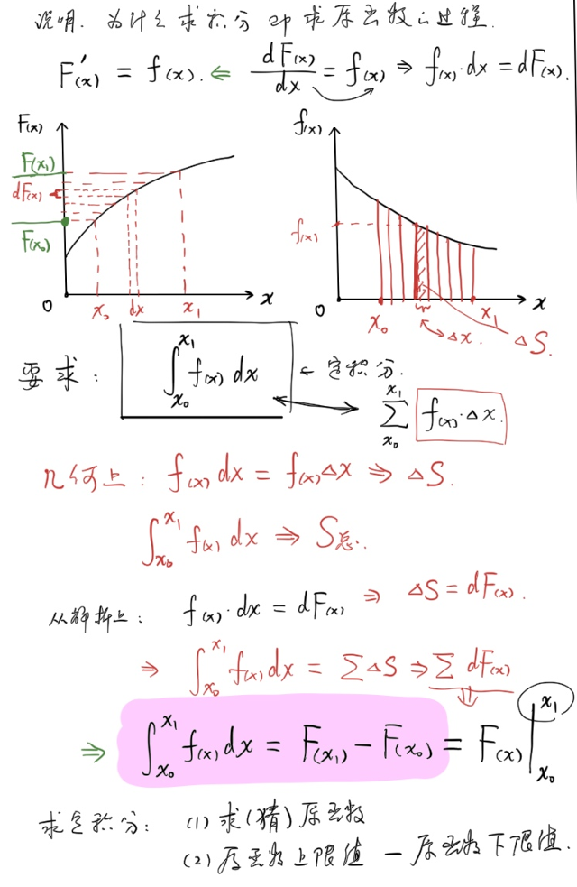
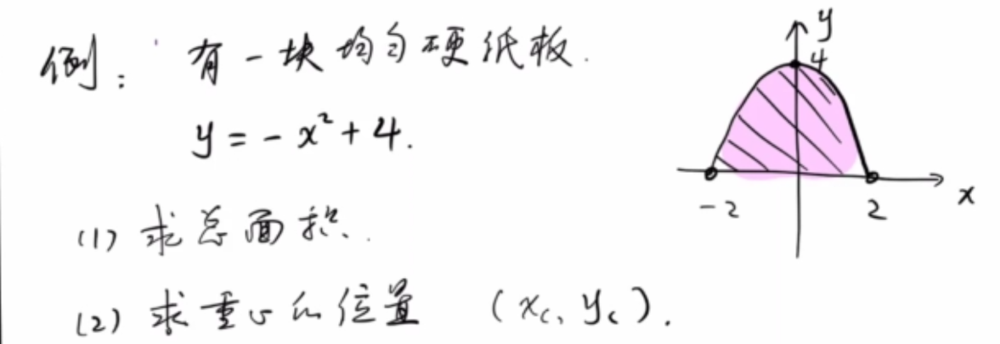
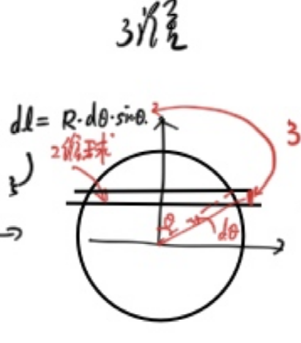
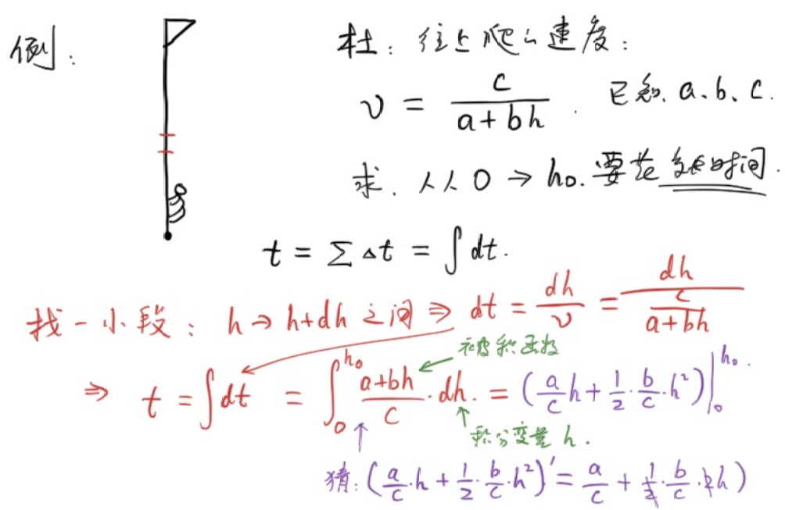

<meta data-freshmark-page data-title="微积分基础导论:简易积分 — Freshmark" data-description="从质量积分出发，系统介绍不定积分与定积分的概念、常用公式及换元法，并通过重心计算、n维球体积推导、阻力运动等物理例题，展示积分在竞赛物理中的实际应用。" data-canonical="https://example.com/posts/physics/basic-calculus-02/" data-article="true"><main><header class="container article-header"><a class="back-link" href="/">← Back to all writing</a><h1>微积分基础导论:简易积分</h1><p class="article-dek">从质量积分出发，系统介绍不定积分与定积分的概念、常用公式及换元法，并通过重心计算、n维球体积推导、阻力运动等物理例题，展示积分在竞赛物理中的实际应用。</p><div class="article-meta"><time datetime="2026-05-22">May 22, 2026</time><span>5 min read</span><span>物理竞赛 · 微积分</span><a href="index.md" download>Download Markdown</a></div></header><div class="article-wrap"><aside class="toc"><p>On this page</p><a href="#">引入</a><a href="#1">例1</a><a href="#">运算</a><a href="#2">例2</a><a href="#">说明</a><a href="#3">例3</a><a href="#4">例4</a><a href="#">法一</a><a href="#">法二</a><a href="#5">例5</a><a href="#">从一维球到二维球</a><a href="#">从二维球到三维球</a><a href="#">从三维球到四维球</a><a href="#6">例6</a><a href="#7">例7</a></aside><article class="prose"><!--more-->
<h2 id="">引入</h2>
<p>假如知道一头猪各个微小部分的密度\(\rho\),怎么求总质量?</p>
\[M=\sum\Delta m_i=\int dm=\int\rho(\vec{r})dV\]
<p>由此,便引入了<strong>不定积分</strong>记号</p>
<h3 id="1">例1</h3>
<p>一根一维细棒,其单位长度的线密度\(\rho(x)=Ax^4\),求总质量:</p>
\[M=\int_{0}^{l_0}\rho(x)dx\]
<p>由此,又引入了<strong>定积分</strong>记号.</p>
<p>其中:</p>
<p>| 被积函数 | 积分变量 | 积分符号 | 上,下限 | | --- | --- | ---| --- | | \(\rho(x)\) | \(x\) | \(\int\) | \(l_0,0\) |</p>
<h2 id="">运算</h2>
<p>求<strong>不定积分</strong>,即求<strong>原函数</strong></p>
<p>定义:若\(F&#39;(x)=f(x)\),则称\(F(x)\)为\(f(x)\)的<strong>原函数</strong>.</p>
<p>容易知道,<strong>原函数</strong>是不唯一的,其常数项是任意的.</p>
<p>\[\int f(x)dx=F(x)+C\]</p>
<h3 id="2">例2</h3>
<p>通过观察,求下列函数的不定积分.</p>
<p>(1)\(\int5x^3dx\)</p>
<p>\(=\frac{5}{4}x^4+C\)</p>
<p>(2)\(\int\sin3x dx\)</p>
<p>\(=-\frac{1}{3}\cos3x+C\)</p>
<p>(3)\(\int\frac{4}{x}dx\)</p>
<p>\(=4\ln x+C\)</p>
<p>(4)\(\int7\cos2xdx\)</p>
<p>\(=\frac{7}{2}\sin 2x\)</p>
<p>以下为常用的不定积分表:</p>
\[\begin{gathered}
  % 高中物理竞赛常用积分表
% ============ 基本积分 ============
\int x^n\,dx &amp;= \frac{x^{n+1}}{n+1}+C, \quad n\neq -1 \\
\int \frac{1}{x}\,dx &amp;= \ln|x|+C \\
\int e^{ax}\,dx &amp;= \frac{1}{a}e^{ax}+C \\
\int a^{x}\,dx &amp;= \frac{a^x}{\ln a}+C \\
\int \ln x\,dx &amp;= x\ln x - x+C \\
% ============ 三角函数 ============
\int \sin x\,dx &amp;= -\cos x+C \\
\int \cos x\,dx &amp;= \sin x+C \\
\int \tan x\,dx &amp;= -\ln|\cos x|+C \\
\int \sin^2 x\,dx &amp;= \frac{x}{2}-\frac{\sin 2x}{4}+C \\
\int \cos^2 x\,dx &amp;= \frac{x}{2}+\frac{\sin 2x}{4}+C \\
\int \sin(ax)\,dx &amp;= -\frac{\cos(ax)}{a}+C \\
\int \cos(ax)\,dx &amp;= \frac{\sin(ax)}{a}+C \\
% ============ 有理/根式 ============
\int \frac{dx}{x^2+a^2} &amp;= \frac{1}{a}\arctan\frac{x}{a}+C \\
\int \frac{dx}{x^2-a^2} &amp;= \frac{1}{2a}\ln\left|\frac{x-a}{x+a}\right|+C \\
\int \frac{dx}{\sqrt{a^2-x^2}} &amp;= \arcsin\frac{x}{a}+C \\
\int \frac{dx}{\sqrt{x^2\pm a^2}} &amp;= \ln\left|x+\sqrt{x^2\pm a^2}\right|+C \\
\int \sqrt{a^2-x^2}\,dx &amp;= \frac{x\sqrt{a^2-x^2}}{2}+\frac{a^2}{2}\arcsin\frac{x}{a}+C \\
% ============ 高频定积分 ============
\int_0^\infty e^{-ax}\,dx &amp;= \frac{1}{a} \\
\int_0^\infty x^n e^{-ax}\,dx &amp;= \frac{n!}{a^{n+1}} \\
\int_{-\infty}^{+\infty} e^{-x^2}\,dx &amp;= \sqrt{\pi} \\
\int_0^{\pi} \sin^2\theta\,d\theta = \int_0^{\pi}\cos^2\theta\,d\theta &amp;= \frac{\pi}{2} \\
\int_0^{2\pi} \sin^2\theta\,d\theta = \int_0^{2\pi}\cos^2\theta\,d\theta &amp;= \pi \\
% ============ 分部积分 ============
\int u\,dv &amp;= uv - \int v\,du \\
\int x e^{ax}\,dx &amp;= \frac{e^{ax}}{a}\left(x-\frac{1}{a}\right)+C \\
\int x\sin(ax)\,dx &amp;= \frac{\sin(ax)}{a^2}-\frac{x\cos(ax)}{a}+C \\
\int x\cos(ax)\,dx &amp;= \frac{\cos(ax)}{a^2}+\frac{x\sin(ax)}{a}+C \\
\int e^{ax}\sin(bx)\,dx &amp;= \frac{e^{ax}(a\sin bx - b\cos bx)}{a^2+b^2}+C \\
\int e^{ax}\cos(bx)\,dx &amp;= \frac{e^{ax}(a\cos bx + b\sin bx)}{a^2+b^2}+C
\end{gathered}\]
<h3 id="">说明</h3>
<p>为什么<strong>求积分</strong>就是<strong>求原函数</strong>的过程?</p>
<p>\[\int_{x_0}^{x_1} f(x)dx=\sum_{x_0}^{x_1}f(x)dx=\sum\Delta S\]</p>
<p>而\(\frac{dF(x)}{dx}=f(x),\)即\(dF(x)=f(x)dx\),故:</p>
<p>\[\int_{x_0}^{x_1} f(x)dx=S=\sum dF(x)=F(x_1)-F(x_0)\]</p>
<p>记作:</p>
<p>\(\int_{x_0}^{x_1} f(x)dx=\left.F(x\right)|_{x_0}^{x_1}\)</p>
<p>不难看出,如果定积分上下限交换,则结果变为相反数.</p>
<p></p>
<h3 id="3">例3</h3>
<p>(1)\(\int_{\textcolor{red}{0}}^{\textcolor{red}{-1}}(a+bx^2)dx\)</p>
<p>原函数\(F(x)=ax+\frac{b}{3}x^3+C\)</p>
<p>\(\int_{0}^{-1}(a+bx^2)dx=F(-1)-F(0)=-a-\frac{b}{3}\)</p>
<p>(2)\(\int_{a}^{b}\sin(kt+\phi_0)dt\)</p>
<p>原函数\(F(x)=-\frac{1}{k}\cos(kt+\phi_0)+C\)</p>
<p>\(\int_{a}^{b}\sin(kt+\phi_0)dt=F(b)-F(a)=...\)</p>
<p>(3)\(\int_{a}^{2a}\frac{1}{(x+a)^2}dx\)</p>
<p>原函数\(F(x)=-(x+a)^{-1}+C\)</p>
<p>\(\int_{a}^{2a}\frac{1}{(x+a)^2}dx=F(2a)-F(a)=\frac{1}{6a}\)</p>
<p>(4)\(\int_{1}^{5}\frac{dx}{x^2+7x+12}\)</p>
<p>把被积函数写成<strong>部分分式</strong>:</p>
<p>\(\frac{1}{x^2+7x+12}=\frac{1}{x+3}+\frac{1}{x+4}\)</p>
<p>原函数\(F(x)=\ln(x+3)-\ln(x+4)+C\)</p>
<p>\(\int_{1}^{5}\frac{dx}{x^2+7x+12}=F(5)-F(1)=\ln8-\ln9-\ln4+\ln5=\ln2-2\ln3+\ln5\)</p>
<p>(5)\(\int_{0}^{1}\sqrt{1-x^2}dx\)</p>
<p>使用第二类换元法:</p>
<p>令\(x=\cos\theta,\theta\in [0,\frac{\pi}{2}]\)</p>
<p>则\(\int_{0}^{1}\sqrt{1-x^2}dx=\int^{\textcolor{red}{0}}_{\textcolor{red}{\frac{\pi}{2}}}\sin\theta d(\cos\theta)=-\int_{\frac{\pi}{2}}^0\sin^2\theta=\int_{\frac{\pi}{2}}^0\frac{\cos2\theta-1}{2}\)</p>
<p>原函数\(F(x)=\frac{1}{4}\sin2x-\frac{x}{2}+C\)</p>
<p>\(\int_{0}^{1}\sqrt{1-x^2}dx=F(0)-F(\frac{\pi}{2})=\frac{\pi}{4}\)</p>
<p>换元法:换掉\(x,dx\)和积分上下限.</p>
<h3 id="4">例4</h3>
<p></p>
<p>有一块均匀硬纸板，其形状为\(y=-x^2+4\)与x轴所围成的图形</p>
<p>(1)求总面积</p>
<p>(2)求重心\((x_c,y_c)\)的面积</p>
<p>Note:积分式中，\(\int f(x)dx\)中的\(dx\)天然存在</p>
<p>(1)竖着切</p>
\[\begin{gathered}
dS=(4-x^2)dx\\
S=\int dS=\int_{-2}^{+2}(4-x^2)dx=\left( -\frac{1}{3}x^3+4x \right)|_{-2}^{+2}=\frac{32}{3}
\end{gathered}\]
<p>(2)横着切</p>
<p>由于图形左右对称，则\(x_c=0\)，又由重心定义:</p>
\[\begin{gathered}
y_c=\frac{\Sigma{m_iy_i}}{\Sigma{m_i}}\\
\frac{\Sigma{m_iy_i}}{\Sigma{m_i}}\\
=\frac{\Sigma{S_iy_i}}{\Sigma{S_i}}\\
=\frac{\int_{0}^{+4}2y\sqrt{4-y}dy}{\frac{32}{3}}  
\end{gathered}\]
<h4 id="">法一</h4>
<p>重点是计算\(\int_{0}^4y\sqrt{4-y}dy\)</p>
<p>利用三角换元化简代数关系：</p>
<p>令\(y=4\sin^2\theta,\theta\in[0,\frac{\pi}{2}],dy=8\sin\theta\cos\theta d\theta\)</p>
\[\begin{gathered}
\int_{0}^4y\sqrt{4-y}dy\\
=64\int_{0}^{\frac{\pi}{2}}\sin^3\theta\cos^2\theta d\theta\\
=-64\int_{0}^{\frac{\pi}{2}}\sin^2\theta\cos^2\theta d\cos\theta\\
=64\int_{0}^{1}(1-u^2)u^2du\\
=64\left(\frac{1}{3}u^3-\frac{1}{5}u^5\right)|_{0}^{1}\\
=\frac{128}{15}  
\end{gathered}\]
\[y_c=\frac{2\frac{128}{15}}{\frac{32}{3}}=\frac{8}{5}\]
<h4 id="">法二</h4>
\[y_c=\frac{\int 2xydy}{S}\]
<p>由于\(y=4-x^2,dy=-2xdx,x\in[0,2]\),故:</p>
<p>注意，积分换元不能改变原变量的范围，并且新变量应该与原变量一一对应.</p>
\[\begin{gathered}
y_c=\frac{\int_{+2}^{0}4x^2(4-x^2)dx}{S}\\
=\frac{\left(\frac{4}{5}x^5-\frac{16}{3}x^3\right)|_{+2}^{0}}{S}\\
=\frac{8}{5}
\end{gathered}\]
<h3 id="5">例5</h3>
<p>求n维球的表&quot;面积&quot;和&quot;体积&quot;</p>
<p>我们定义，球是所有到O点的距离小于等于R的点构成的集合.</p>
<p>不难看出，一维的球为一条线段;二维的球为一个圆饼;三维的球就是常规意义的球</p>
<p>接下来，我们定义这些球的面积与体积:</p>
<p>n维球的体积\(V_n\)，即<strong>占有的空间</strong>与<strong>单位空间</strong>的比值</p>
<p>由常识不难得出：</p>
<p>\(V_1(R)=2R,V_2(R)=\pi R^2,V_3(R)=\frac{4}{3}\pi R^3\)</p>
<p>但研究4,5维球时，我们的常识就失去了作用.</p>
<p>为了解决更高维的问题，我们诉诸于对低维度球的重新思考：</p>
<h4 id="">从一维球到二维球</h4>
<p>对于二维球，在\(\theta,\theta+d\theta\)处各切一刀</p>
<p></p>
<p>\[\begin{gathered} dV_2=V_1(R\sin\theta)dl\\ =2R\sin\theta(R\sin\theta d\theta)\\ V_2=\int dV_2=\int_{0}^\pi 2R^2\sin^2\theta d\theta\\ =R^2\int_0^\pi (1-\cos2\theta)d\theta\\ =R^2\left(\theta-\frac{1}{2}\sin2\theta\right)|_0^\pi\\ =\pi R^2 \end{gathered}\]</p>
<h4 id="">从二维球到三维球</h4>
<p>继续计算三维球的体积:</p>
<p>类似的，在\(\theta,\theta+d\theta\)处各切一刀</p>
<p>\[\begin{gathered} dV_3=V_2(R\sin\theta)dl\\ =\pi R^2\sin^2\theta(R\sin\theta d\theta)\\ =\pi R^3\sin^3\theta d\theta\\ V_3=\int dV_3\\ =\int_{0}^\pi \pi R^3\sin^3\theta d\theta\\ =-\pi R^3\int_{0}^\pi (1-\cos^2\theta)d\cos\theta\\ =\pi R^3\int_{-1}^{+1}(1-u^2)du\\ =\pi R^3\left(u-\frac{1}{3}u^3\right)|_{-1}^{1}\\ =\frac{4}{3}\pi R^3 \end{gathered}\]</p>
<p>对于三角函数积分，有如下的二级结论：</p>
<ul><li>奇次幂：换元</li><li>偶次幂：倍角公式</li></ul>
<h4 id="">从三维球到四维球</h4>
<p>激动人心的时刻到了，仿照之前的解法:</p>
<p>\[\begin{gathered} dV_4=V_3(R\sin\theta)(R\sin\theta d\theta)\\ =\frac{4}{3}\pi R^4\sin^4\theta d\theta\\ V_4=\int dV_4\\ =\frac{4}{3}\pi R^4\int_{0}^\pi \sin^4\theta d\theta\\ =\frac{4}{3}\pi R^4\int_{0}^\pi (\frac{1-\cos2\theta}{2})^2\\ =\frac{1}{3}\pi R^4\int_{0}^\pi (\cos^2\theta-2\cos\theta+1)d\theta\\ =\frac{1}{3}\pi R^4\int_{0}^\pi (\frac{1}{2}\cos4\theta-2\cos2\theta+\frac{3}{2})d\theta\\ =\frac{1}{3}\pi R^4\left(\frac{1}{8}\sin4\theta-\sin2\theta+\frac{3}{2}\theta\right)|_{0}^{\pi}\\ =\frac{1}{2}\pi^2 R^4 \end{gathered}\]</p>
<h3 id="6">例6</h3>
<p></p>
<p>有一个人向旗杆上爬，向上爬的速度为\(v=\frac{c}{a+bh}\),其中a,b,c均为常量.</p>
<p>求这个人从高度为0爬到高度为\(h_0\)所需的时间.</p>
\[\begin{gathered}
  dt=\frac{dh}{v}=\frac{dh}{\frac{c}{a+bh}}\\
  t=\int dt\\
  =\int_{0}^{h_0}\frac{a+bh}{c}dh\\
  =\left(\frac{a}{c}h+\frac{b}{2c}h^2\right)|_0^{h_0}\\
  =\frac{a}{c}h_0+\frac{b}{2c}h_0^2
\end{gathered}\]
<h3 id="7">例7</h3>
<p>一水平运动小球质量为\(m\),初速度为\(v_0\),受阻力\(f=-kv\).</p>
<p>(1)球停止时的位移\(x\)</p>
<p>(2)任意\(t\)时刻的速度\(v\)与位移\(x\)</p>
<p>(1)</p>
<p>牛顿第二定律：\(a=\frac{f}{m}=-\frac{k}{m}v\)</p>
<p>即：\(\frac{dv}{dt}=-\frac{k}{m}\frac{dx}{dt}\)</p>
<p>所以\(dv=-\frac{k}{m}dx\)</p>
<p>\(\boxed{dv=-\frac{k}{m}dx}\)</p>
<p>(Aha)第一个微分方程出现了!</p>
<p>由于x,v一一对应，所以对等式两边积分，从开始到停下:</p>
<p>\[\begin{gathered} \int_{v_0}^0dv=-\frac{k}{m}\int_0^{x_0}dx\\ -v_0=-\frac{k}{m}x_0\\ x_0=\frac{mv_0}{k} \end{gathered}\] (2)在上一问中，我们消去了\(dt\),留下了\(dv,dx\). 为了求出\(v(t),x(t)\)，不能消去\(dt\) \[\begin{gathered} \frac{dv}{dt}=-\frac{k}{m}v\\ dt=-\frac{m}{k}\frac{1}{v}dv\\ \int_{0}^tdt=-\frac{m}{k}\int_{v_0}^v\frac{1}{v}dv\\ t=-\frac{m}{k}\ln \frac{v}{v_0}\\ v(t)=v_0e^\frac{-kt}{m} \end{gathered}\]</p>
\[\begin{gathered}
x(t)=\int_0^tv(t)dt\\
=v_0\int_0^te^\frac{-kt}{m}dt\\
=v_0\left(-\frac{m}{k}e^\frac{-kt}{m}\right)|_0^t\\
=v_0(-\frac{m}{k}e^{-\frac{kt}{m}}+\frac{m}{k})
\end{gathered}\\
=\frac{mv_0}{k}(1-e^{\frac{-kt}{m}})\]
<p>Sonnet 4.6 ---</p>
<p><strong>核心内容</strong></p>
<p>文章从物理问题出发（如求质量、位移），自然地引入不定积分与定积分的概念，再通过大量例题展示积分的实际运算方法。</p>
<p><strong>主要知识点</strong></p>
<p>文章涵盖：不定积分（求原函数）与定积分的定义；常用积分公式表；换元法（三角换元、代数换元）与分部积分；以及牛顿-莱布尼茨公式的几何直觉。</p>
<p><strong>例题体系</strong></p>
<p>例题由浅入深，从基础的多项式、三角函数积分，逐步过渡到：抛物线形硬纸板的面积与重心计算；n 维球体积的递推推导（1 维到 4 维）；物理应用（爬杆问题、阻力运动问题），其中阻力运动一题还自然引出了第一个微分方程。</p>
<p><strong>风格特点</strong></p>
<p>行文轻松（&quot;一头猪&quot;的引入）、物理直觉与数学推导并重，适合有一定高中数学基础、正在备赛物理竞赛的学生阅读。</p></article></div></main>